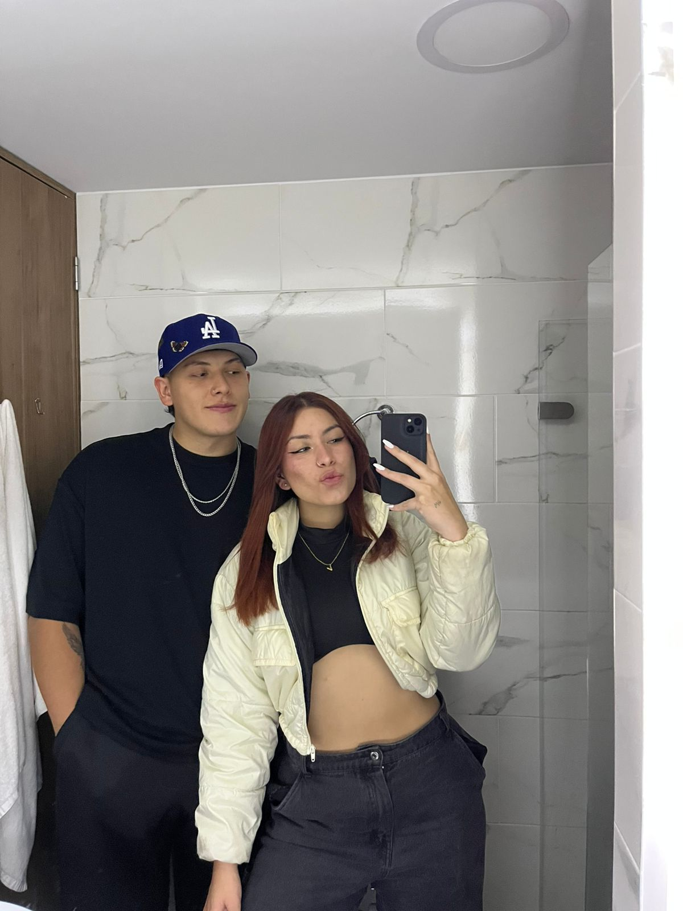
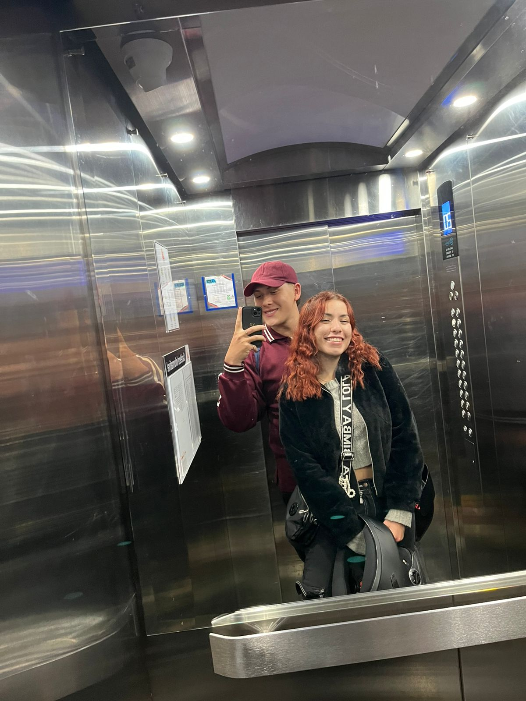
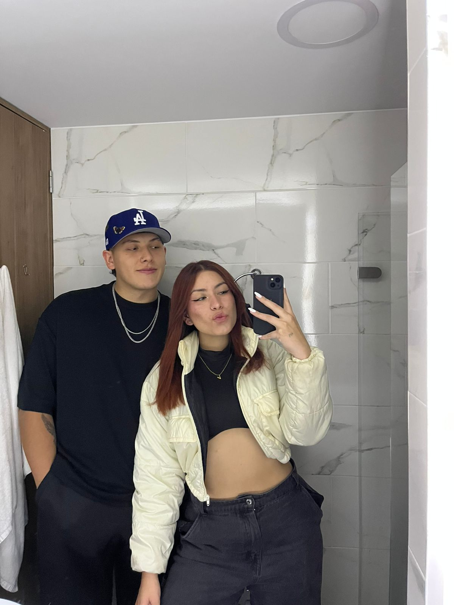
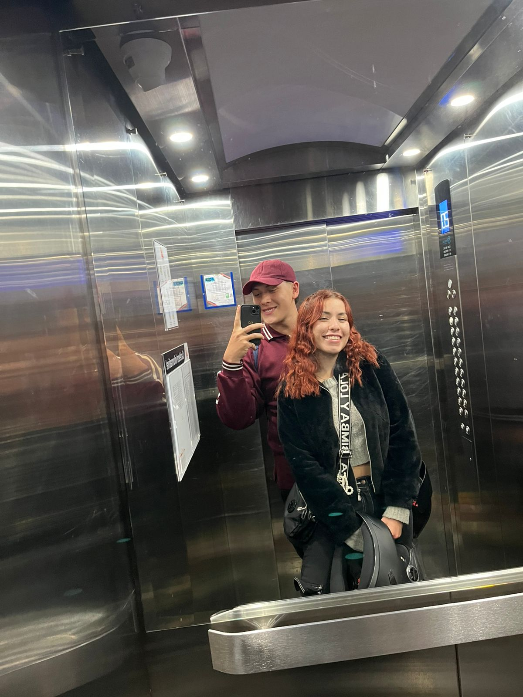
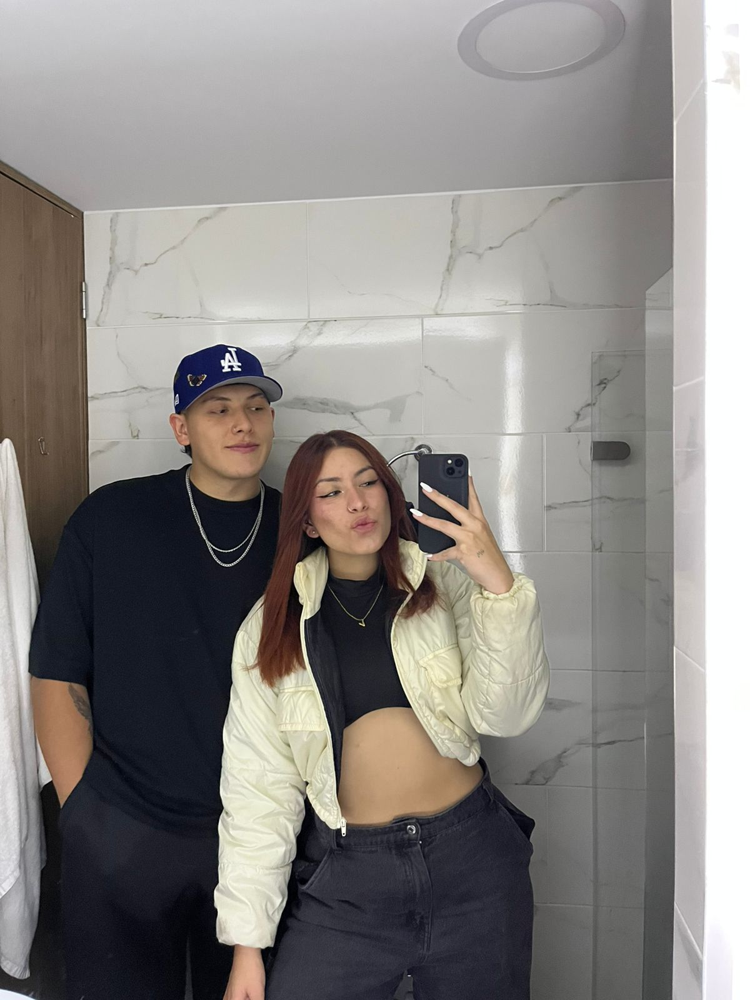
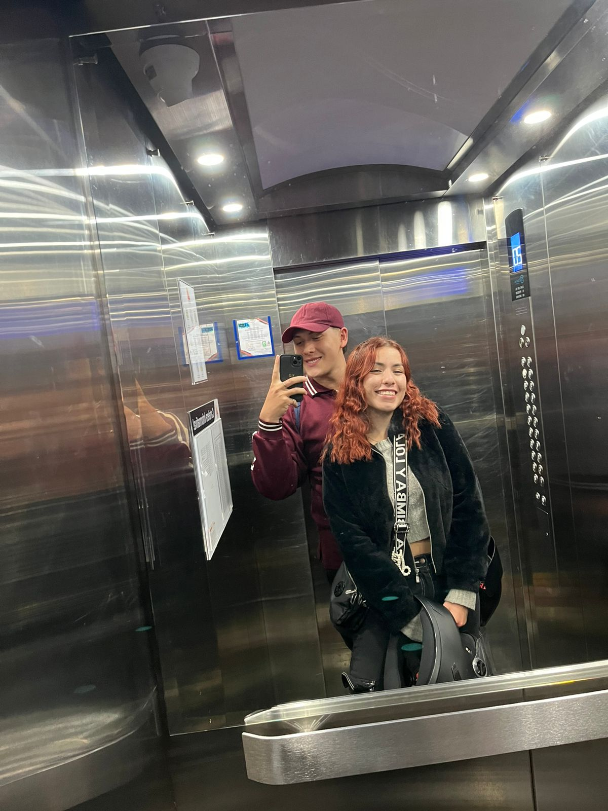
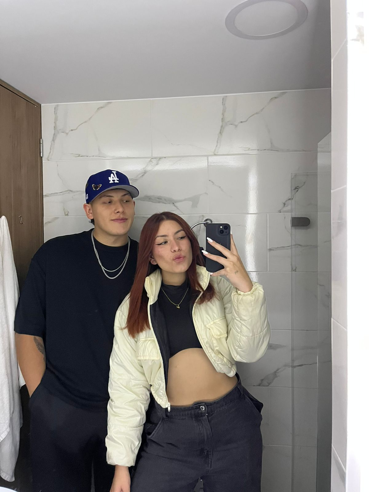
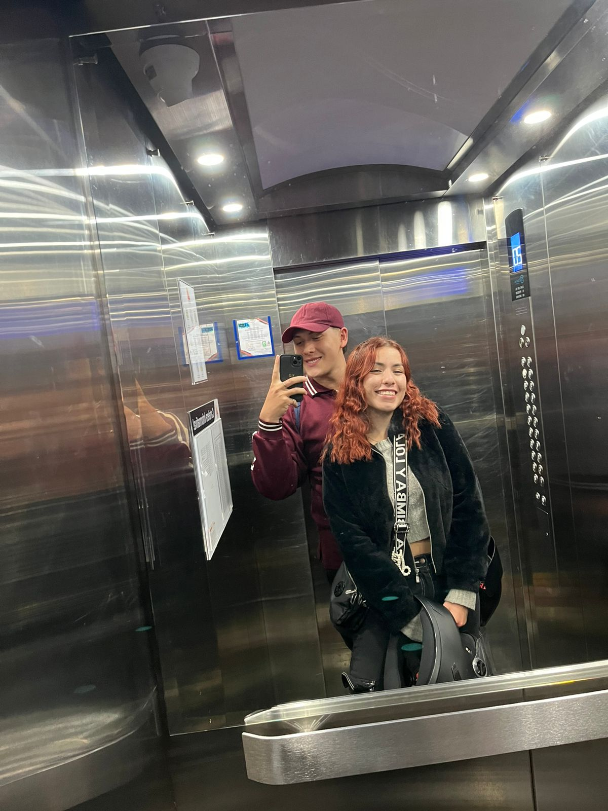

Hola, creo que para este punto ya estamos "cansados" de besarnos tanto, porque sé que tu respuesta fue un "SI". Sin embargo, pensé "¿por qué no mostrarte un poco de lo que me gusta?" y la mejor forma es hacerte una página. Es un pequeño detalle que estará siempre con nosotros. Te prometo mejorar y ser el mejor, porque tú me haces ser mejor persona.
Esta carta es solo una pequeña muestra de todo lo que siento por ti. Gracias por ser mi compañera, mi risa, mi calma y mi todo.
Te amo más de lo que las palabras pueden decir, mi cielo.
Con todo mi amor,
Tu Sebastián ü©µ